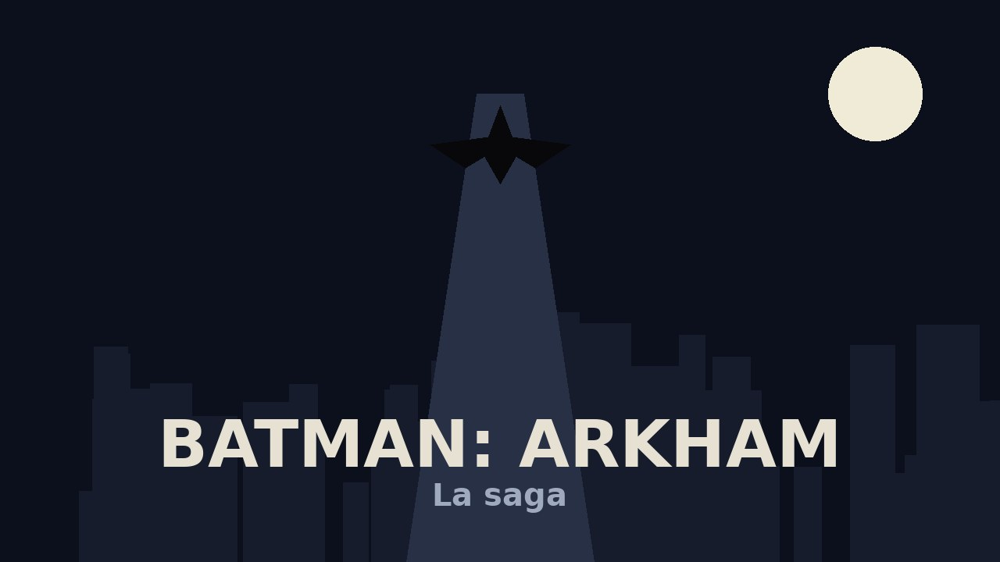

La saga que redefinió los videojuegos de superhéroes.
Bienvenido a mi proyecto sobre la saga Batman: Arkham, la serie de Rocksteady Studios que revolucionó los juegos de superhéroes con su combate fluido, su modo detective y una Gotham llena de villanos icónicos.
En esta web encontrarás una página dedicada a cada entrega de la saga, con su sinopsis, datos del estudio, nota de la crítica y lo mejor de cada juego. Si quieres ver los datos en bruto, están todos en el archivo datos.xml.

La saga tiene cuatro juegos principales, tres de Rocksteady y una precuela de otro estudio.
Resumen de los datos de cada juego (los mismos que hay en datos.xml):
Juego Año Estudio Nota --------------- ----- ------------------- ---- Arkham Asylum 2009 Rocksteady Studios 9.1 Arkham City 2011 Rocksteady Studios 9.4 Arkham Origins 2013 WB Games Montreal 7.4 Arkham Knight 2015 Rocksteady Studios 8.7
«Soy la venganza. Soy la noche. ¡Soy Batman!»
— Batman, con la voz de Kevin Conroy en Batman: La serie animada (1992), el mismo actor que le dio voz en la trilogía de Rocksteady.
© 2026 David Cabrera González · Proyecto de Lenguajes de Marcas
Batman y todos sus personajes son marcas de DC Comics & Warner Bros. Games. Web hecha a mano con <HTML> sin CSS (¡de momento!).